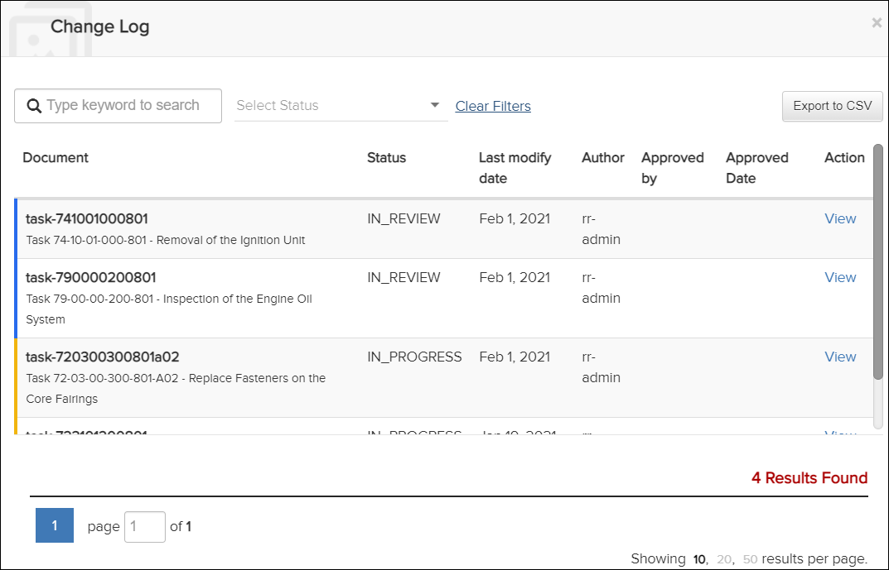
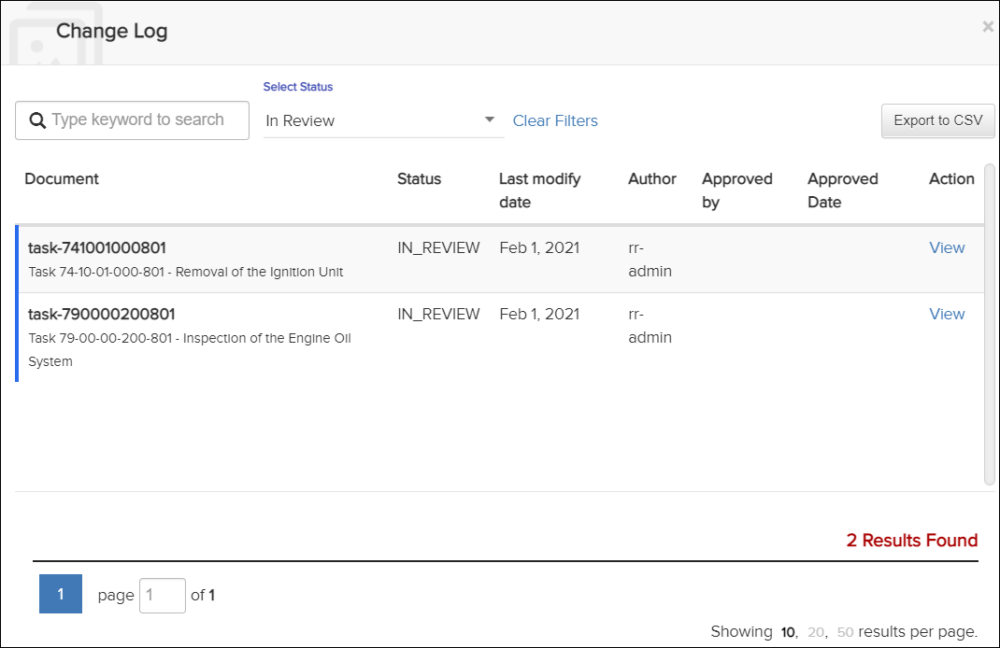

Not applicable for Pinpoint Standalone Light.
If the user has permissions for the Can review change log privilege, the document can be viewed from the Change Log dialog. You can access this dialog by selecting the
Change Log Dialog
You can limit the items displayed using one of these options at the top of the
Change Log dialog:
This is an example with a Select Status of "In
Review":- Enter a keyword in the Search field.
- Click the down arrow to the right of the Select Status
field.Activate one or all of the options to view publications with that status:
- In Review
- In Progress
- Approved

Change Log Dialog - Select Status
Click Clear Filters to remove values for the Search or Select Status filters.
You
can also export the Change Log content in CSV format. The
Change Log dialog appears. Click the  button on the top right side of the dialog. The file is downloaded. Open the file to view
the content.
button on the top right side of the dialog. The file is downloaded. Open the file to view
the content.